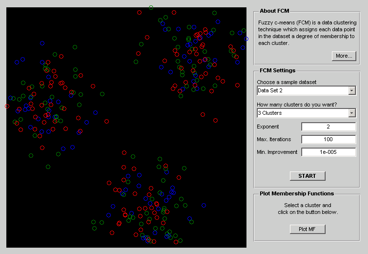

Fuzzy C-Means Clustering
This demo illustrates performing fuzzy c-means clustering on 2-dimensional data.
Contents
Clustering of numerical data forms the basis of many classification and system modeling algorithms. The purpose of clustering is to identify natural groupings of data from a large data set to produce a concise representation of a system's behavior.
What Is Fuzzy C-Means Clustering?
Fuzzy c-means (FCM) is a data clustering technique in which a dataset is grouped into n clusters with every datapoint in the dataset belonging to every cluster to a certain degree. For example, a certain datapoint that lies close to the center of a cluster will have a high degree of belonging or membership to that cluster and another datapoint that lies far away from the center of a cluster will have a low degree of belonging or membership to that cluster.
The Fuzzy Logic Toolbox™ function fcm performs FCM clustering. It starts with an initial guess for the cluster centers, which are intended to mark the mean location of each cluster. The initial guess for these cluster centers is most likely incorrect. Next, fcm assigns every data point a membership grade for each cluster. By iteratively updating the cluster centers and the membership grades for each data point, fcm iteratively moves the cluster centers to the right location within a data set. This iteration is based on minimizing an objective function that represents the distance from any given data point to a cluster center weighted by that data point's membership grade.
Interactive FCM Clustering Demo
Using the fcmdemo command, you can launch a GUI that lets you try out various parameter settings for the fuzzy c-means algorithm and observe the effect on the resulting 2-D clustering. You can choose a sample data set and an arbitrary number of clusters from the drop down menus on the right, and then click "Start" to start the fuzzy clustering process. The clustering itself is performed by the fcm function.

Figure 1: Demo GUI for Fuzzy C-Means Clustering.
Once the clustering is done, you can select one of the clusters by clicking on it, and view the membership function surface by clicking the "Plot MF" button. To get a better viewing angle, click and drag inside the figure to rotate the MF surface.
You can also tune the 3 optional parameters for the FCM algorithm (exponent, maximum number of iterations and minimum amount of improvement) from the demo GUI and observe how the clustering process is consequently altered.
Performing FCM Clustering on Your Own Data
The function fcm takes a data set and a desired number of clusters and returns optimal cluster centers and membership grades for each data point. You can use this information to build a fuzzy inference system by creating membership functions that represent the fuzzy qualities of each cluster.
Here is the underlying code that performs the clustering.
data = load('fcmdata.dat'); % load some sample data n_clusters = 3; % number of clusters [center,U,obj_fcn] = fcm(data, n_clusters);
Iteration count = 1, obj. fcn = 6.379151 Iteration count = 2, obj. fcn = 4.907101 Iteration count = 3, obj. fcn = 4.847428 Iteration count = 4, obj. fcn = 4.447136 Iteration count = 5, obj. fcn = 3.306271 Iteration count = 6, obj. fcn = 2.422911 Iteration count = 7, obj. fcn = 2.180720 Iteration count = 8, obj. fcn = 2.109423 Iteration count = 9, obj. fcn = 2.084711 Iteration count = 10, obj. fcn = 2.075537 Iteration count = 11, obj. fcn = 2.071419 Iteration count = 12, obj. fcn = 2.069188 Iteration count = 13, obj. fcn = 2.067795 Iteration count = 14, obj. fcn = 2.066845 Iteration count = 15, obj. fcn = 2.066166 Iteration count = 16, obj. fcn = 2.065670 Iteration count = 17, obj. fcn = 2.065304 Iteration count = 18, obj. fcn = 2.065032 Iteration count = 19, obj. fcn = 2.064830 Iteration count = 20, obj. fcn = 2.064679 Iteration count = 21, obj. fcn = 2.064567 Iteration count = 22, obj. fcn = 2.064482 Iteration count = 23, obj. fcn = 2.064419 Iteration count = 24, obj. fcn = 2.064372 Iteration count = 25, obj. fcn = 2.064337 Iteration count = 26, obj. fcn = 2.064310 Iteration count = 27, obj. fcn = 2.064291 Iteration count = 28, obj. fcn = 2.064276 Iteration count = 29, obj. fcn = 2.064265 Iteration count = 30, obj. fcn = 2.064256